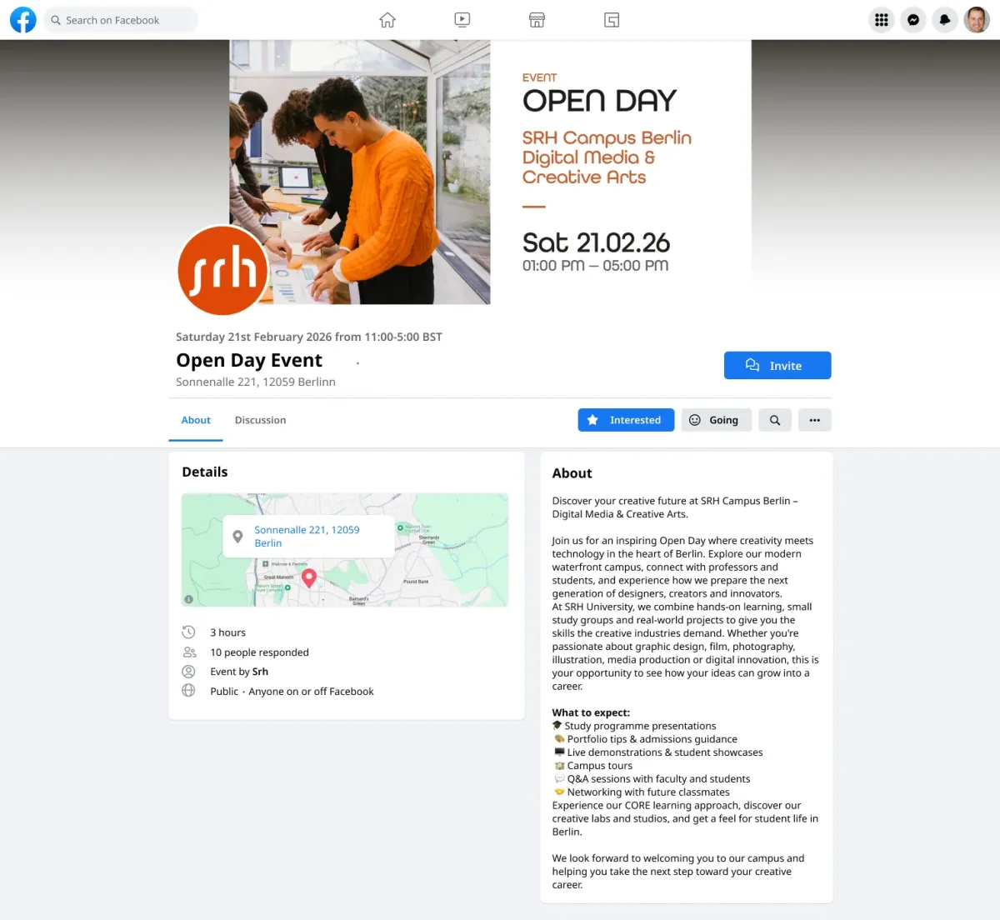
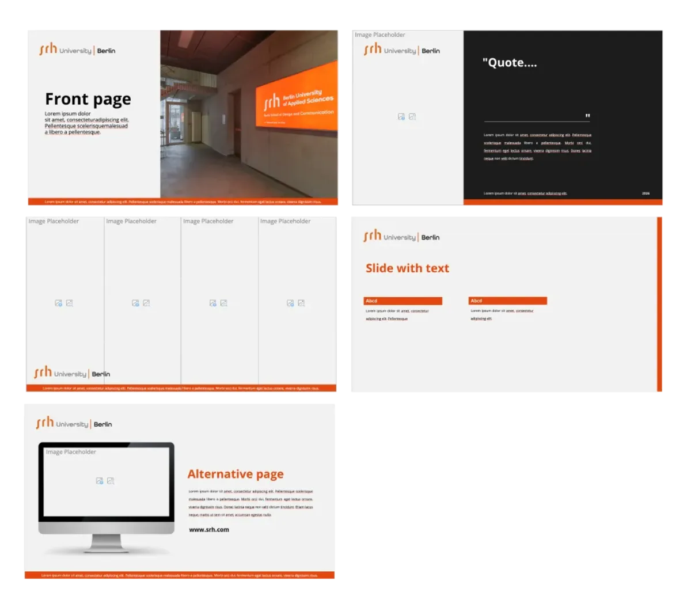

Flerkanalspublisering
Oppgaven har vært å utvikle en visuell kommunikasjonsløsning for et arrangement på tvers av flere medier. Prosjektet tar utgangspunkt i Open Day ved SRH Campus Berlin og studieområdet Digital Media & Creative Arts, et fiktivt paraplykonsept for kreative fag. Arrangementet brukes som et case for å utforske et tydelig visuelt uttrykk gjennom struktur, hierarki og konsistente designprinsipper.
Prosjektet går ut på å utvikle et visuelt uttrykk som fungerer på tvers av flere flater.
Designet bygger på SRH University Berlins eksisterende visuelle identitet, men videreutvikles gjennom egne designvalg. Fokus har vært på tydelig hierarki, struktur og en balansert bruk av typografi, bilde og luft i layouten.
- Plakat i A2-format
- Roll-up banner (850 × 2000 mm)
- Brosjyre om universitetets bærekraftsarbeid
- LinkedIn-karusell for promotering av arrangementet
- PowerPoint-mal for presentasjoner
- Digitale reklamebannere
- Facebook event cover for mobil og desktop
- Designmanual for den visuelle identiteten
Typografien er basert på en rund og moderne grotesk skrifttype inspirert av SRHs visuelle profil.
Siden den originale fonten ikke er tilgjengelig, brukes en alternativ font med lignende uttrykk (men ikke like brukervennlig). Ulike skriftvekter og størrelser skaper likevel et tydelig hierarki mellom overskrifter, mellomtitler og brødtekst.
Fotografiene viser campusmiljøet ved SRH University Berlin og fungerer som sentrale visuelle elementer i designet. Bildene gir kontekst til arrangementet. Alle er gratis nedlastbare hos deres nettside.
Fargepaletten tar utgangspunkt i SRH University Berlins merkevarefarger.
En varm oransjetone brukes som aksentfarge sammen med mørke og lyse nøytrale toner. Dette skaper et tydelig og konsistent uttrykk på tvers av flater.



